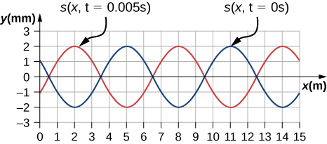

![Figure A is a graph that shows the gauge pressure of the air versus the distance from the speaker. The gauge pressure is modeled with a sine function, where the crests of the function line up with the compressions and the troughs line up with the rarefactions. Figure B is the displacement of the air molecules versus the position. The displacement is modeled with a cosine function, where the zeroes are for the molecules in their equilibrium position and are centered at the compressions and rarefactions.](CNX_UPhysics_17_01_Speaker.jpg)
By the end of this section, you will be able to:
The physical phenomenon of sound is a disturbance of matter that is transmitted from its source outward. Hearing is the perception of sound, just as seeing is the perception of visible light. On the atomic scale, sound is a disturbance of atoms that is far more ordered than their thermal motions. In many instances, sound is a periodic wave, and the atoms undergo simple harmonic motion. Thus, sound waves can induce oscillations and resonance effects ([link]).
This video shows waves on the surface of a wine glass, being driven by sound waves from a speaker. As the frequency of the sound wave approaches the resonant frequency of the wine glass, the amplitude and frequency of the waves on the wine glass increase. When the resonant frequency is reached, the glass shatters.
A speaker produces a sound wave by oscillating a cone, causing vibrations of air molecules. In [link], a speaker vibrates at a constant frequency and amplitude, producing vibrations in the surrounding air molecules. As the speaker oscillates back and forth, it transfers energy to the air, mostly as thermal energy. But a small part of the speaker’s energy goes into compressing and expanding the surrounding air, creating slightly higher and lower local pressures. These compressions (high-pressure regions) and rarefactions (low-pressure regions) move out as longitudinal pressure waves having the same frequency as the speaker—they are the disturbance that is a sound wave. (Sound waves in air and most fluids are longitudinal, because fluids have almost no shear strength. In solids, sound waves can be both transverse and longitudinal.)
[link](a) shows the compressions and rarefactions, and also shows a graph of gauge pressure versus distance from a speaker. As the speaker moves in the positive x-direction, it pushes air molecules, displacing them from their equilibrium positions. As the speaker moves in the negative x-direction, the air molecules move back toward their equilibrium positions due to a restoring force. The air molecules oscillate in simple harmonic motion about their equilibrium positions, as shown in part (b). Note that sound waves in air are longitudinal, and in the figure, the wave propagates in the positive x-direction and the molecules oscillate parallel to the direction in which the wave propagates.
Sound can be modeled as a pressure wave by considering the change in pressure from average pressure,
This equation is similar to the periodic wave equations seen in Waves, where is the change in pressure, is the maximum change in pressure, is the wave number, is the angular frequency, and is the initial phase. The wave speed can be determined from Sound waves can also be modeled in terms of the displacement of the air molecules. The displacement of the air molecules can be modeled using a cosine function:
In this equation, s is the displacement and is the maximum displacement.
Not shown in the figure is the amplitude of a sound wave as it decreases with distance from its source, because the energy of the wave is spread over a larger and larger area. The intensity decreases as it moves away from the speaker, as discussed in Waves. The energy is also absorbed by objects and converted into thermal energy by the viscosity of the air. In addition, during each compression, a little heat transfers to the air; during each rarefaction, even less heat transfers from the air, and these heat transfers reduce the organized disturbance into random thermal motions. Whether the heat transfer from compression to rarefaction is significant depends on how far apart they are—that is, it depends on wavelength. Wavelength, frequency, amplitude, and speed of propagation are important characteristics for sound, as they are for all waves.
What is the difference between sound and hearing?
Sound is a disturbance of matter (a pressure wave) that is transmitted from its source outward. Hearing is the human perception of sound.
You will learn that light is an electromagnetic wave that can travel through a vacuum. Can sound waves travel through a vacuum?
Sound waves can be modeled as a change in pressure. Why is the change in pressure used and not the actual pressure?
Consider a sound wave moving through air. The pressure of the air is the equilibrium condition, it is the change in pressure that produces the sound wave.
Consider a sound wave modeled with the equation What is the maximum displacement, the wavelength, the frequency, and the speed of the sound wave?
Consider a sound wave moving through the air modeled with the equation What is the shortest time required for an air molecule to move between 3.00 nm and –3.00 nm?
Consider a diagnostic ultrasound of frequency 5.00 MHz that is used to examine an irregularity in soft tissue. (a) What is the wavelength in air of such a sound wave if the speed of sound is 343 m/s? (b) If the speed of sound in tissue is 1800 m/s, what is the wavelength of this wave in tissue?
a. b.
A sound wave is modeled as What is the maximum change in pressure, the wavelength, the frequency, and the speed of the sound wave?
A sound wave is modeled with the wave function and the sound wave travels in air at a speed of (a) What is the wave number of the sound wave? (b) What is the value for ?
a.
b.
The displacement of the air molecules in sound wave is modeled with the wave function . (a) What is the wave speed of the sound wave? (b) What is the maximum speed of the air molecules as they oscillate in simple harmonic motion? (c) What is the magnitude of the maximum acceleration of the air molecules as they oscillate in simple harmonic motion?
A speaker is placed at the opening of a long horizontal tube. The speaker oscillates at a frequency f, creating a sound wave that moves down the tube. The wave moves through the tube at a speed of The sound wave is modeled with the wave function At time , an air molecule at is at the maximum displacement of 7.00 nm. At the same time, another molecule at has a displacement of 3.00 nm. What is the frequency at which the speaker is oscillating?
A 250-Hz tuning fork is struck and begins to vibrate. A sound-level meter is located 34.00 m away. It takes the sound to reach the meter. The maximum displacement of the tuning fork is 1.00 mm. Write a wave function for the sound.
A sound wave produced by an ultrasonic transducer, moving in air, is modeled with the wave equation The transducer is to be used in nondestructive testing to test for fractures in steel beams. The speed of sound in the steel beam is Find the wave function for the sound wave in the steel beam.
Porpoises emit sound waves that they use for navigation. If the wavelength of the sound wave emitted is 4.5 cm, and the speed of sound in the water is what is the period of the sound?
Bats use sound waves to catch insects. Bats can detect frequencies up to 100 kHz. If the sound waves travel through air at a speed of what is the wavelength of the sound waves?
A bat sends of a sound wave 100 kHz and the sound waves travel through air at a speed of (a) If the maximum pressure difference is 1.30 Pa, what is a wave function that would model the sound wave, assuming the wave is sinusoidal? (Assume the phase shift is zero.) (b) What are the period and wavelength of the sound wave?
Consider the graph shown below of a compression wave. Shown are snapshots of the wave function for (blue) and (orange). What are the wavelength, maximum displacement, velocity, and period of the compression wave?
Consider the graph in the preceding problem of a compression wave. Shown are snapshots of the wave function for (blue) and (orange). Given that the displacement of the molecule at time and position is derive a wave function to model the compression wave.
A guitar string oscillates at a frequency of 100 Hz and produces a sound wave. (a) What do you think the frequency of the sound wave is that the vibrating string produces? (b) If the speed of the sound wave is
what is the wavelength of the sound wave?
(a) (b)